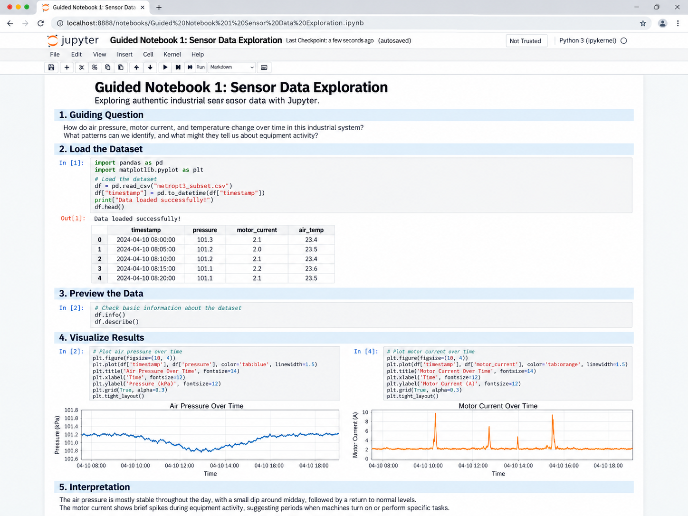
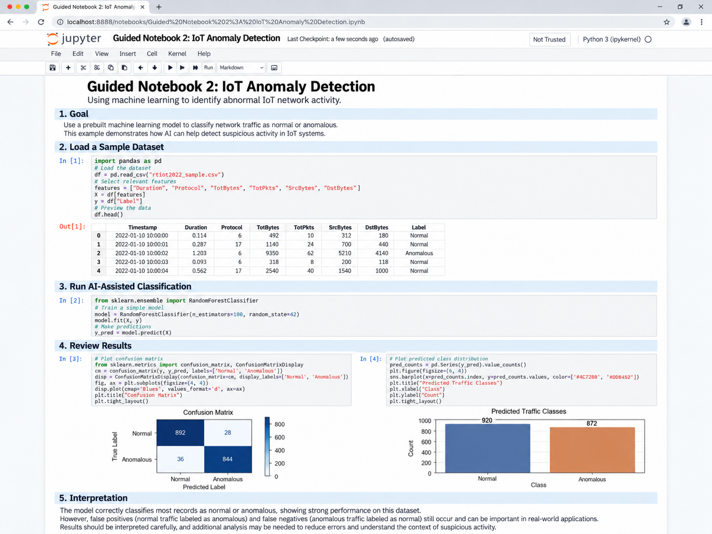
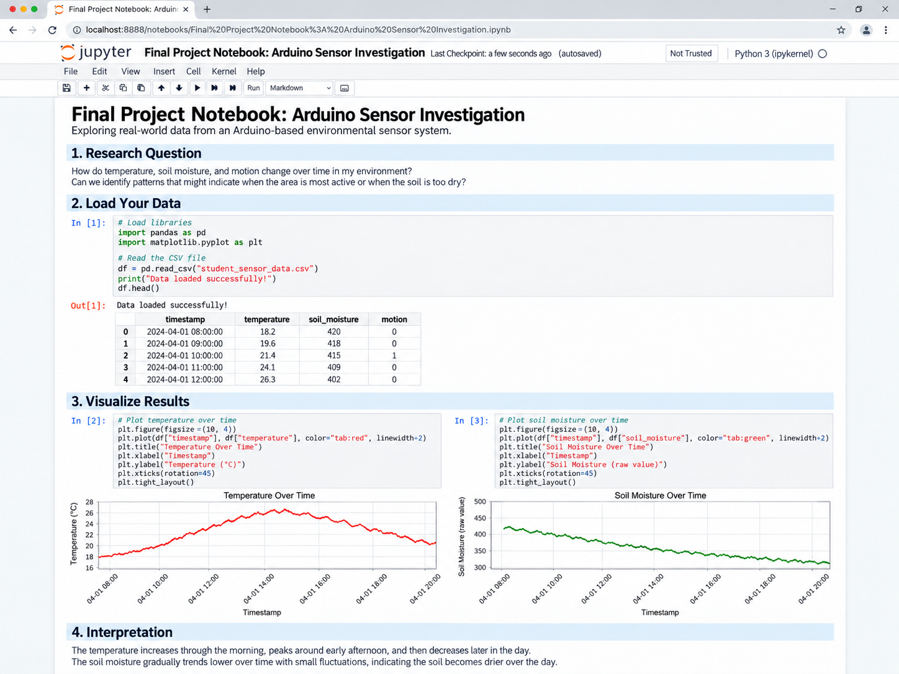
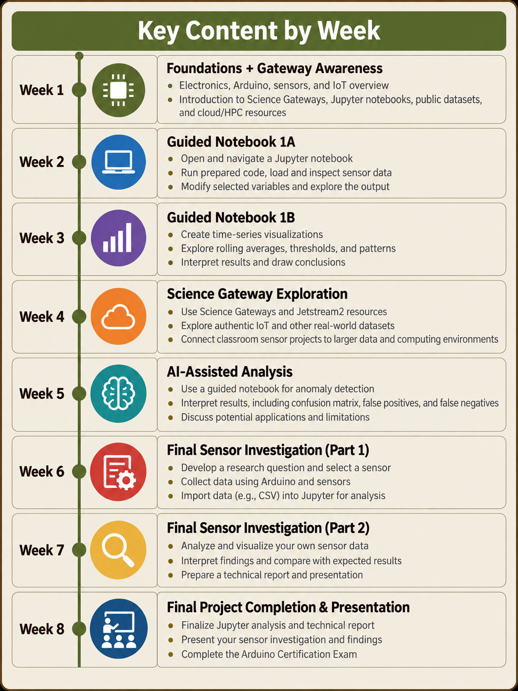
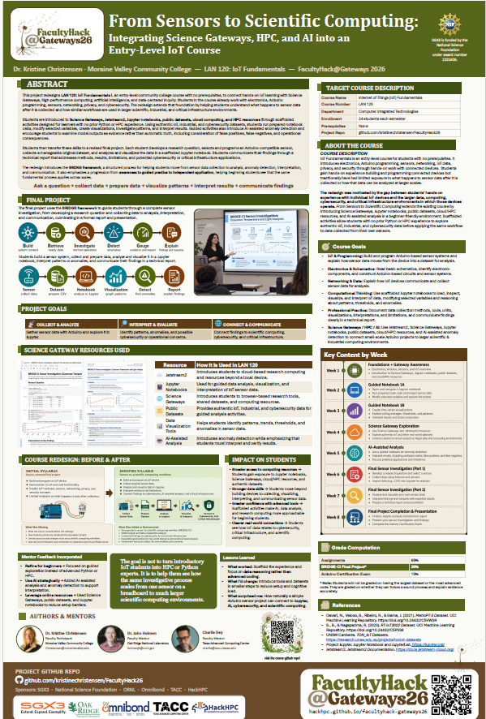
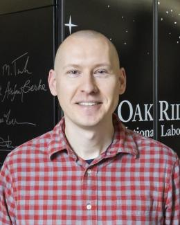

Jetstream2
Cloud-based research and education computing for exposure to resources beyond one laptop.
Visit Jetstream2 ↗FacultyHack@Gateways 2026 · LAN 120: IoT Fundamentals I
Integrating Science Gateways, HPC, and AI into an Entry-Level IoT Course
An approachable pathway that moves beginning IoT students from Arduino sensors and classroom-scale data to Jupyter notebooks, authentic datasets, AI-assisted analysis, and advanced computing resources.
Project overview
LAN 120: IoT Fundamentals I is an entry-level course with no prerequisites. Students learn electronics, Arduino programming, sensors, networking, IoT data, privacy, and security through hands-on work with connected devices.
The redesign addresses a gap between building an individual IoT device and understanding what happens to its data afterward. Students are introduced to Science Gateways, Jetstream2, Jupyter notebooks, public datasets, cloud/HPC concepts, visualization, and AI-assisted analysis through scaffolded activities that do not require prior Python or HPC experience.
Students first work with authentic datasets and then transfer the workflow to an original sensor investigation using data they collect themselves.
Learning design
The course keeps its hands-on electronics foundation while adding a structured pathway into data analysis and scientific computing.
Course goals
Electronics & Schematics
Read basic schematics, identify components, and construct Arduino-based circuits and sensor systems.
IoT Hardware & Programming
Build and program IoT devices using Arduino, sensors, and embedded-system concepts.
Networking & Data
Explain how IoT devices communicate and collect sensor data for analysis.
Data Analysis
Use scaffolded Jupyter notebooks to load, visualize, and interpret sensor data.
Science Gateways / HPC / AI
Use Jetstream2, public datasets, cloud/HPC resources, and AI-assisted tools to explore how IoT data can be analyzed beyond a single device.
BRIDGE-CI framework
Science Gateway & computing resources
Students encounter the larger computing ecosystem without being expected to become HPC or Python specialists.
Cloud-based research and education computing for exposure to resources beyond one laptop.
Visit Jetstream2 ↗Interactive notebooks that combine code, explanation, data, outputs, and visualizations.
Visit Jupyter ↗A national cyberinfrastructure ecosystem supporting access to advanced computing resources.
Visit ACCESS-CI ↗| Dataset | What students explore | Instructional use |
|---|---|---|
| MetroPT-3 | Industrial sensor time series | Jupyter basics, visualization, normal behavior, thresholds |
| RT-IoT2022 | Normal and anomalous IoT network activity | AI-assisted analysis, confusion matrices, false positives/negatives |
| TON_IoT | IoT/IIoT telemetry, network, and system data | Optional extension into larger IT/OT environments |
| Student sensor data | Small CSV datasets collected with Arduino-compatible sensors | Final project transfer and independent investigation |
Notebook experience
The repository currently includes visual previews of the planned guided notebooks and final-project notebook.



Course sequence
Science Gateway, notebook, AI, and sensor-investigation experiences are integrated progressively across the eight-week course.

Student deliverable
Students transfer the notebook process to a manageable dataset they collect themselves.
Develop a research question.
Select a sensor and construct the system.
Program the Arduino and gather data.
Organize and export a CSV dataset.
Load data into Jupyter.
Create meaningful graphs.
Explain findings and limitations.
Submit a technical report and presentation.
Assessment
Students are evaluated on asking a sound question, producing usable data, applying the notebook workflow, interpreting evidence, and communicating what they learned.
Open Final ProjectGrade computation
| Assignments | 65% |
| BRIDGE-CI Final Project | 20% |
| Arduino Certification Exam | 15% |
| Total | 100% |
Repository materials
The website is the front door; the complete course redesign materials are organized by purpose in the project-materials folder.
Conference deliverable

The poster summarizes the course redesign, BRIDGE-CI framework, notebook progression, Science Gateway resources, final project, assessment, and anticipated student impact.
Conference Reflection
BRIDGE-CI, hands-on HPC learning, new collaborations, and expanding access to research computing for community college students.
Participating in FacultyHack@Gateways 2026 gave me the opportunity to rethink how I introduce advanced computing concepts to students in an entry-level Internet of Things course. My curriculum project, BRIDGE-CI: From Sensors to Scientific Computing, focuses on LAN 120: IoT Fundamentals I at Moraine Valley Community College, a course with no prerequisites where students are often encountering electronics, programming, networking, and cybersecurity for the first time.
Students in LAN 120 already build Arduino-based systems, program sensors, explore IoT networking, and learn about privacy and security. What I wanted to add was the next part of the story: What happens to the data after the sensor collects it? How can students move from a few hundred readings generated by a classroom device to understanding the kinds of data-analysis workflows used in scientific, industrial, and critical infrastructure environments?
FacultyHack helped me shape that question into a more intentional course redesign.
BRIDGE-CI introduces students to Jupyter notebooks, public datasets, Science Gateways, cloud and HPC resources, visualization, and AI-assisted analysis while preserving the hands-on nature of the existing IoT course. The goal is not to turn introductory IoT students into Python programmers or HPC specialists. Instead, I want students to understand that these resources exist, become comfortable interacting with them, and begin to see how the work they already do connects to a much larger computing ecosystem.
The redesign follows a progression from awareness to guided practice to independent application. Students first encounter the tools and concepts through structured examples. They then work with scaffolded Jupyter notebooks using authentic sensor and cybersecurity datasets, where they can run prepared code, change selected variables, create visualizations, and interpret what they see. Finally, they transfer that process to a sensor investigation of their own.
For the culminating project, students develop a research question, select and program an Arduino-compatible sensor, collect their own data, export it to a CSV file, and analyze it in a Jupyter notebook. They create visualizations, investigate patterns or anomalies, consider what the evidence means, and connect their findings to IoT, cybersecurity, or critical infrastructure. The project concludes with a formal technical report and presentation.
One of the ideas that emerged from the redesign was the BRIDGE framework: Build system context, Retrieve and Ready the data, Investigate normal operation, Detect anomalies, Gauge evidence and impact, and Explain findings and response. What I like about this framework is that it focuses on the investigative process rather than a particular piece of software. Whether students are working with one Arduino sensor or a much larger research dataset, the underlying habits are similar.
“The goal is not to turn introductory IoT students into HPC or Python experts. It is to help them see how the same investigative process scales from one sensor on a breadboard to much larger scientific computing environments.”
My hands-on experience with the HPC tools is still developing, and I see that as an important continuation of the FacultyHack experience rather than something that ended with the conference.
I now have accounts in place, appointments scheduled, and a clearer understanding of the steps needed to request allocations and begin working more directly with the available computing environments. I am continuing to explore how resources such as Jetstream2, ACCESS-CI, Jupyter-based environments, Science Gateways, and other national research computing resources can be incorporated into a community college classroom in ways that are realistic and sustainable.
One of the most useful things FacultyHack did was help me move beyond simply knowing that these resources exist. I now have people I can ask, pathways I can follow, and a better understanding of how to begin connecting students to them.
That matters because access to advanced computing can be intimidating, particularly for beginning students. Accounts, allocations, unfamiliar interfaces, command-line environments, and technical terminology can all become barriers before students ever reach the interesting part of the experience. I became much more focused on how browser-based tools, scaffolded notebooks, public datasets, and carefully designed activities can lower those barriers without oversimplifying the underlying concepts.
I am continuing to work through the technical pieces, test the environments, and determine which resources will work best for LAN 120. That work will continue well beyond the conference.
One of the biggest highlights of FacultyHack was meeting the other participants, mentors, and organizers.
Working alongside faculty who were trying to solve similar instructional problems made the experience much richer. We came from different institutions and disciplines, but many of us were asking the same kinds of questions: How do we make advanced computing approachable? How do we integrate these resources without overwhelming students? How do we connect classroom learning to authentic research and computational practice? Those conversations helped refine my own project considerably.
My mentors also encouraged me to keep the redesign grounded in the realities of an introductory course. Their feedback helped me focus on guided exploration rather than advanced programming, use AI where it genuinely supports beginning students, and take advantage of existing online resources rather than creating unnecessary technical barriers.
Just as valuable were the connections I made throughout the Gateways conference itself. I met people working in Science Gateways, HPC, cybersecurity, research computing, education, and related areas who I expect to continue collaborating with after the conference. For me, those relationships may ultimately be one of the most important outcomes of the entire experience.
Another major highlight was having the opportunity to present my work in multiple ways.
I was able to present my FacultyHack poster, From Sensors to Scientific Computing: Integrating Science Gateways, HPC, and AI into an Entry-Level IoT Course, and also present my paper during the conference. Both experiences allowed me to share the project with people outside of my immediate discipline, hear new perspectives, and think more carefully about how the work connects to the broader Science Gateways community.
Those were opportunities I likely would not have had without participating in FacultyHack. Presenting the work also changed how I thought about the project. Explaining the redesign to others forced me to articulate what was most important. The project is not really about teaching students one particular technology. It is about expanding what students understand is possible and helping them recognize that they can participate in data-intensive and computational work.
One of my strongest takeaways from Gateways 2026 is the potential these resources have to reduce barriers for community college students.
Students at community colleges may have limited exposure to research computing environments, HPC resources, Science Gateways, or large scientific datasets. That lack of exposure does not mean they are incapable of working with them. Often, they simply have not been given an accessible entry point.
I plan to continue working with these rich resources because they can expand access to computing research, HPC, Science Gateways, and data-intensive learning opportunities for students who might not otherwise encounter them.
The key, especially in an introductory course, is making that first experience successful. A student does not need to begin by writing sophisticated Python code or submitting jobs to a large computing cluster. They might begin by opening a browser-based Jupyter notebook, changing one variable, creating a graph, asking why a sensor reading looks unusual, and realizing that they can understand what the data are telling them.
That small experience can change how a student sees themselves in relation to computing and research.
FacultyHack did not feel like the completion of the project. It felt much more like the beginning.
I will continue developing the Jupyter activities, testing computing environments, requesting the appropriate allocations, and identifying additional datasets and Science Gateway resources that can support the course. I also see opportunities to extend BRIDGE-CI into cybersecurity, data analytics, applied AI, and other technical courses.
I hope to continue working with the people I met through FacultyHack and Gateways and to build new collaborations around datasets, computing access, classroom activities, and student research opportunities.
My biggest takeaway is that advanced computing can be introduced without beginning with advanced complexity. With thoughtful scaffolding, authentic data, accessible tools, and the right support, community college students can begin engaging with scientific computing much earlier than we sometimes assume.
Sometimes the path to HPC and research computing can begin with something very small: one sensor on a breadboard, one question, and a few hundred data points. That is the bridge I want to continue building.
Mentorship & support

Faculty Mentor
Oak Ridge National Laboratory
Technical Collaborator
Texas Advanced Computing Center
“The goal is not to turn introductory IoT students into HPC or Python experts. It is to help them see how the same investigative process scales from a sensor on a breadboard to larger scientific computing environments.”